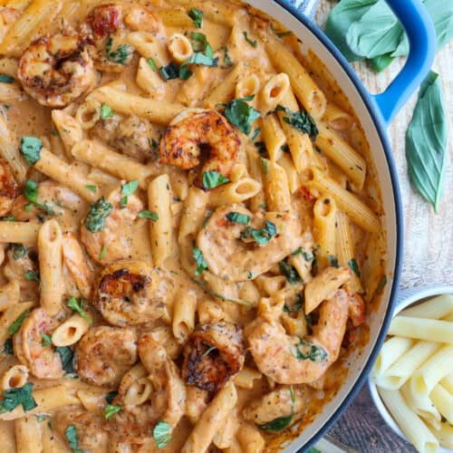

Marry Me Shrimp Pasta
Home

Description
This Marry Me Shrimp Pasta is everything you
love about Marry Me Chicken Pasta but made
with shrimp this time. A rich, creamy, seasoned,
sun-dried tomato sauce, and perfectly cooked shrimp
come together to create a seafood version.
This recipe uses simple ingredints to create
deep flavors. There's nothing fancy and it
requires no special ingredients.
Ingredients
For the Shrimp
- 1 LB large shrimp
- 1/2 TBSP smoked paprika
- 3/4 TBSP italian seasoning
- 1/4 tsp black pepper
- 3/4 tsp salt
- 1 1/2 TBSP sun dried tomato oil
For the Sauce
- 2 1/2 TBSP tomato paste
- 1/2 sun-dried tomatos
- 1 TBSP italian seasoning
- 1/3 tsp swet smoked paprika
- 1/2 tsp salt
- 3/4 tsp dried basil
- 2 TBSP flour
- 2 cups diced spinach
- 2 TBSP butter
- 2 TBSP minced onion
- 2 cups vegetable broth
- 1 cup heavy cream
- 1 cup parmesan cheese
- 12 oz penne pasta
Steps
For the Shrimp
- Boil the pasta according to the package
directions for al dente while you cook
the shrimp.
- Toss the shrimp with the paprika, Italian
seasoning, salt, and pepper in a medium
bowl until they're evenly coated.
- Heat the sun-dried tomato oil in a large
skillet over medium heat. Then, cook the
shrimp for two minutes on both sides until
they are pink, opaque, and C-shaped. If
they're O-shaped, you've cooked them too
long.
- Set the cooked shrimp aside to cool.
For the Sauce
- Melt the butter in the same pan over
medium-low heat. Then, add the garlic,
onion, sun-dried tomatoes, tomato paste,
Italian seasoning, paprika, salt, and
dried basil. Cook the mixture for about
two minutes until fragrant.
- Add the flour to the aromatics and stir
well. Then, add the broth, heavy cream,
and spinach. Stir and cook until the
sauce thickens and the spinach starts
to wilt - about 5 minutes. Then, add
the parmesan cheese and stir until
melted.
- arefully mix the pasta into the sauce.
Then, add the shrimp and gently stir
again. Garnish with fresh basil, and
enjoy.